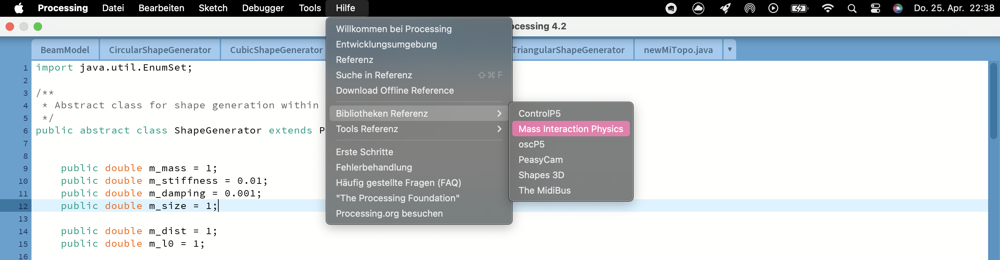
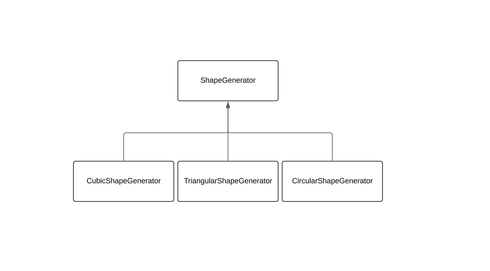

Code Documentation
System Requirements
- Processing IDE
- ImFusion
- cmake
- qtCreator
- miPhysics library for physics simulation
- PeasyCam library for 3D camera control
- oscP5 library for handling OSC messages
- netP5 library for networking capabilities
Phymodel
For this please refer to the miPhysics Library documentation which you can find in Processing. 
ShapeGenerator

Overview
The ShapeGenerator is an abstract class designed to facilitate shape generation within a physics engine. This class extends PhyModel and includes methods for setting up and manipulating physical properties, as well as adding nodes and connections based on geometric parameters.
Properties
- m_mass: Default mass of nodes (default: 1.0).
- m_stiffness: Spring stiffness (default: 0.01).
- m_damping: Damping coefficient (default: 0.001).
- m_size: Size of the nodes (default: 1.0).
- m_dist: Default distance between nodes (default: 1.0).
- m_l0: Natural length of springs (default: 1.0).
- m_neighbors: Number of neighboring nodes each node should connect to (default: 2).
- plane2D: Determines if the shapes are generated in a 2D plane (boolean).
- m_generated: Indicates if the shape has been generated (boolean, initially
false).
Constructor
public ShapeGenerator(String name, Medium m)
Parameters: name: Name of the shape generator. m: Medium in which the shapes will be generated.
Methods
init()
Initializes the shape generation. If shapes have not been generated (m_generated is false), the program will terminate with an error message.
generate()
Abstract method that must be implemented by subclasses to define specific shape generation logic.
setParams(double mass, double stiffness, double damping)
Sets the mass, stiffness, and damping parameters.
- Parameters:
- mass: Mass of the nodes.
- stiffness: Stiffness of the springs.
- damping: Damping coefficient.
setGeometry(double dist, double l0)
Sets the geometric properties of the shape, including the distance between nodes and the natural length of the springs.
- Parameters:
- dist: Distance between nodes.
- l0: Natural length of the springs.
addNodeAt(int x, int y, int z)
Adds a node at specified coordinates.
- Parameters:
- x: X-coordinate of the node.
- y: Y-coordinate of the node.
- z: Z-coordinate of the node.
addConnectionFor(int x1, int y1, int z1, int x2, int y2, int z2)
Creates a connection between two nodes defined by their coordinates.
- Parameters:
- x1, y1, z1: Coordinates of the first node.
- x2, y2, z2: Coordinates of the second node.
processPoints(int numClosest)
Processes all nodes to find and connect each node to its closest neighbors based on a specified number of closest points.
- Parameters:
- numClosest: Number of closest points to connect to each node.
findClosestPoints(Mass currentPoint, ArrayList of Mass points, int numClosest)
Finds and returns a list of the closest points to a given point, based on the specified number of closest neighbors.
- Parameters:
- currentPoint: The point from which distances are measured.
- points: List of all points.
- numClosest: Number of closest points to find.
euclideanDistance(Mass p1, Mass p2)
Calculates and returns the Euclidean distance between two points.
- Parameters:
- p1: First point.
- p2: Second point.
Private Helper Methods
getNodeName(int x, int y, int z)
Generates a standardized node name based on its coordinates.
- Parameters:
- x: X-coordinate of the node.
- y: Y-coordinate of the node.
- z: Z-coordinate of the node.
- Returns: A string representing the node name, formatted as m_x_y_z.
Example Usage
CircularShapeGenerator myShapeGen = new CircularShapeGenerator("MyShape", someMedium);
myShapeGen.setParams(2.0, 0.05, 0.002);
myShapeGen.setGeometry(1.5, 1.0);
myShapeGen.generate();